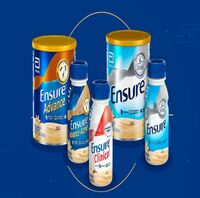
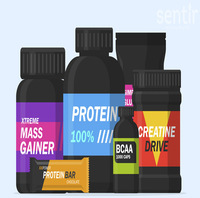

Cremas Faciales
productos cosméticos hidratantes que ayudan a mantener la humedad y elasticidad de tu piel, evitando la resequedad y brindando un cierto nivel de protección al rostro.
Ver mas
Geles Faciales
Productos de limpieza que eliminan la suciedad y las impurezas de la piel, dejándola limpia, fresca y lista para recibir otros productos de cuidado de la piel.
Ver mas

Suplementos dietarios
Suplementos diseñados para complementar la dieta y proporcionar nutrientes adicionales que pueden ser escasos en la alimentación diaria.
Ver mas

Suplementos Deportivos
Diseñados para ayudar a los atletas y personas activas a mejorar su rendimiento físico, acelerar la recuperación y promover el crecimiento muscular.
Ver mas
La OMS defiende que las bebidas alcohólicas incluyan en su etiquetado el riesgo de desarrollar cáncer
Ver más
El epidemiólogo Óscar Zurriaga aconseja vacunarse a quienes lleven tiempo sin hacerlo.
Ver más
¿Cuál es el edulcorante más sano? Esta es la opinión de la OMS acerca de la polémica.
Ver más
El VIH, la hepatitis B y la hepatitis C pueden detectarse a partir de una sola gota de sangre, según un estudio.
Ver más
La OMS pone fin a más de tres años de emergencia internacional por la covid.
Ver más

Una inteligencia artificial predice la genética de tumores cerebrales en menos de 90 segundos.
Ver más